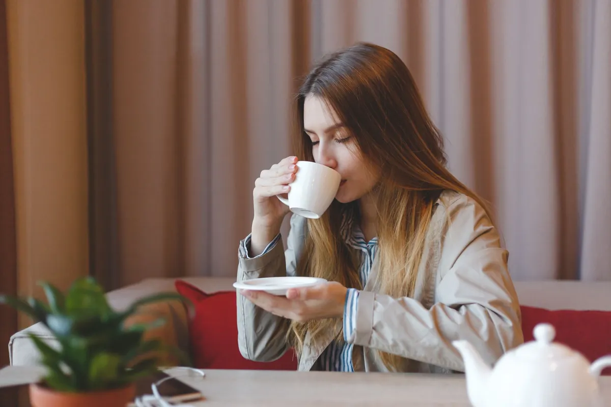

Morning Routines for Energy & Focus: Boost Your Day Even If You're Not a Morning Person
Key takeaways
- I used to dread my alarm clock.
- My mornings were a blur of hitting snooze, grabbing the nearest coffee, and stumbling through the day feeling like I was wading through molasses.
- Track what feels sustainable and adjust gradually.
I used to dread my alarm clock. My mornings were a blur of hitting snooze, grabbing the nearest coffee, and stumbling through the day feeling like I was wading through molasses. Brain fog was my constant companion, and focus felt like a distant dream. If this sounds familiar, you're not alone. I've spent years experimenting to find Morning Routines for Energy & Focus: Boost Your Day that actually work, even for the most reluctant risers. It's not about becoming a 5 AM guru overnight; it's about creating small, powerful habits that reset your mind and body.
The biggest hurdle for many of us is the idea that we *have* to be a morning person to be productive. I believed that lie for too long. It turns out, you can cultivate the *benefits* of a morning routine without forcing yourself into a lifestyle that feels unnatural. It's about working *with* your body, not against it.
Let's talk about hydration. Before you even think about coffee, grab a glass of water. I keep a big one by my bed. Dehydration is a major culprit behind fatigue and that fuzzy-headed feeling. Rehydrating first thing signals to your body that it's time to wake up and get moving. It's a simple step, but the impact on my mental clarity was surprisingly significant. Consider adding a squeeze of lemon for an extra vitamin C boost, which can also support your immune system – a related healthy tip you might find useful.
The 2-Minute Win
Right now, while you're reading this, go get a glass of water and drink it. That's it. You've just completed your first morning win!
Movement is another game-changer. I’m not talking about a grueling gym session before sunrise. Even five minutes of gentle stretching or a short walk can make a huge difference. I love doing some simple yoga poses or just walking around my block. It gets the blood flowing and wakes up my muscles. This helps combat that sluggish feeling and primes my brain for better focus. If you're looking for another practical guide to incorporating movement, check out this link.
Pro-Tip: Try a few minutes of mindful movement, like dynamic stretches (arm circles, leg swings) or a short, brisk walk outdoors. Sunlight exposure, even for a few minutes, helps regulate your circadian rhythm and can significantly boost your mood and energy levels.
What you eat for breakfast matters, too. I used to grab a sugary donut, and it would lead to an energy crash by mid-morning. Now, I opt for protein and healthy fats. Think eggs, avocado, or a Greek yogurt with berries. This provides sustained energy and keeps you feeling full and focused. It’s a similar wellness insight to understanding how your gut health impacts your overall energy. A balanced breakfast is crucial for maintaining stable blood sugar, which directly affects your concentration and mood.
For those who find it hard to get going, the key is to make your morning routine appealing. I started by pairing a less-than-thrilling habit, like journaling, with something I enjoy, like listening to a podcast or my favorite music. This makes the process more enjoyable and less of a chore. It’s about building positive associations. If you're struggling to stay consistent with these habits, this guide on habit formation can help.
Let's talk about screens. I know, it's tempting to scroll through your phone the moment you wake up. But that blue light can disrupt your body's natural wake-up signals and bombard you with information before you're ready. I make a conscious effort to keep my phone on airplane mode for the first 30-60 minutes of my day. This allows my mind to ease into the day without external demands. It’s amazing how much calmer and more focused I feel when I delay screen time.
Mindfulness or meditation, even for just a few minutes, can be incredibly powerful. It helps to calm a racing mind and set a positive intention for the day. I started with just 3 minutes of deep breathing. It sounds simple, but it significantly reduced my anxiety and improved my ability to concentrate on tasks. Explore more guides on mental wellness to find what resonates with you.
Creating your ideal morning routine is an ongoing process. Some days will be easier than others. The goal isn't perfection; it's progress. Celebrate the small wins and be kind to yourself when you slip up. These Morning Routines for Energy & Focus: Boost Your Day are designed to be flexible and adaptable to your life.
Disclosure: This page may contain affiliate links.
Recommended Reading
- The Ultimate Guide to Daily Hydration: Boost Energy & Wellness
- Boost Your Morning: Energy & Focus Hacks for a Productive Day
- Morning Hydration: Unlock Your Day with the Best Water Habits
More in healthy-habits

healthy-habitsUnlock Your Healthiest Life: The Secret is in How You Sip Your Tea!
Discover how the simple act of sipping tea can unlock your healthiest life. Learn brewing secrets, mindful practices, an
Read article →Older Adults' Surprising Salt Habit Revealed in New Study
Discover the surprising salt habit of older adults from a new study. Learn what it means for your health and how to make
Read article →